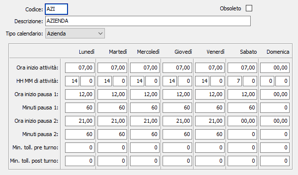

Calendari
La tabella consente l'inserimento e la configurazione dei calendari che saranno utilizzati dalle procedure di produzione per i calcoli relativi alle date di consegna, produzione e schedulazione. In base alla configurazione è possibile impostare un calendario creato come:
Aziendale: viene utilizzato nella fase di generazione del piano di produzione e nei calcoli relativi alle date di produzione e consegna, se non specificato diversamente sull'unità produttiva.
Acquisti: viene utilizzato nella fase di generazione del piano di produzione per la determinazione della data di acquisto del materiale, se non presente viene utilizzato il calendario aziendale.

è necessario indicare l'ora di inizio attività (nel formato HH,MM) e nei campi "HH MM attività", le ore ed i minuti di lavoro effettivi al netto delle pause; è possibile specificare due periodi di pausa (ora inizio (HH,MM) e durata) al fine di consentire di gestire i calcoli dei tempi per le aziende in cui i turni prevedono delle interruzioni programmate. E’ anche possibile indicare un periodo di tolleranza (pre e post turno) espresso in minuti in cui l’operatore può registrare versamenti. Questi ultimi parametri agiscono nelle funzioni di gestione operazioni bordo macchina e registrazione versamenti.
Sono previsti vari tipi di calendario specificabile tramite la casella a discesa relativa, il calendario di Reparto/Risorsa attualmente non è utilizzato. Per ogni giorno della settimana è possibile definire ore e minuti di lavoro e ora e minuti di inizio. Tale gestione è completata dalla gestione dei giorni di chiusura/assenze che consentono di indicare specifici periodi di chiusura.